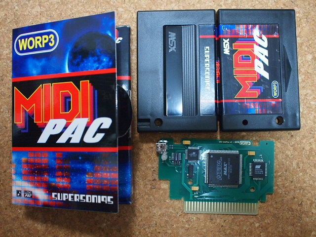

MSX MUSIC
MSX MUSICと言えば、FM-PACやMSX2+に内蔵されているYM2413が有名。しかし世の中にはより高音質なMSX MUSIC互換カートリッジがあるという。
SuperSoniqsさんのところで売られているMSX MUSIC互換カートリッジ。音源としてMIDIを使う「MIDI PAC」という製品です。ここではMSX MUSIC互換カートリッジだけで無く、「PlaySoniq」というMSXがSega MkIII互換になってしまうらしいカートリッジを販売されていますが、それはまた次の機会に・・・。
MIDI-PACの基板はこんな感じです。

MIDI PAC自体は音源ではなく、専用MIDIケーブルでMIDIに接続することによりMIDI音源から音が鳴ります。
YouTubeでもMIDI PACで検索すると何件かアップされています。
とはいえ、FM音源が内蔵の機種では使えないのが難点。MSX本体からPSGと内蔵MSX MUSICの音がMIXされてでてくるので、ハードウェア的な改造をしないとPSGのみ取り出すのは難しいです。PSGのみをMIDIのLINE INに入れることによって、MIDIからの音がMSXからの音と同等になります。
漢字ROM等は複数存在したときに外付けを優先し、内蔵漢字ROMをDisableにするのですが、MSX MUSICは内蔵を優先して外付けをEnableにしません。そのため、MIDI PACを付けても内蔵MSX MUSICから音が出てしまいます。
あとはMSX MUSICの互換なので当然モノラルのままです。
マイクロキャビンのようにMSX MUSICで作り込んでいるゲームでは、内蔵のMSX MUSICの方がいい音がでます。あまり作り込んでいない機種だと、MIDIの方が良い音になるように個人的には感じました。